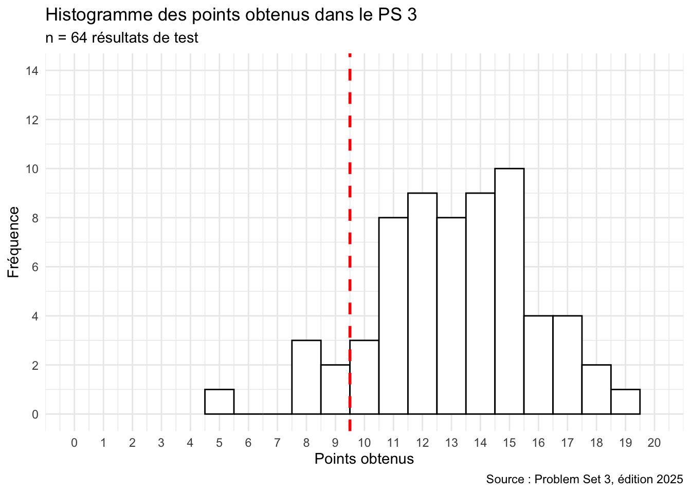

9 Révision 3 : manipulation de données
ImportantObjectifs d’apprentissage
- Vérifier que vous savez importer un fichier CSV et contrôler sa structure.
- Vérifier que vous savez répondre à une question à l’aide des verbes de
dplyr. - Repérer, grâce aux explications, les notions à revoir.
Ce chapitre reprend les chapitres 7 et 8. La plupart des questions vous demandent d’exécuter du code sur igposts.csv, mtcars ou diamonds : gardez RStudio ouvert à côté.
Dans le cours, le Problem Set 3 était un test sur Moodle portant sur les chapitres 7 et 8. Les questions ci-dessous en reprennent le contenu, avec la correction et une explication pour chaque réponse.
Mise en gardeContexte : résultats de l’édition 2025 du cours
64 étudiant·es ont passé ce test (20 points au maximum, 10 pour réussir). La moyenne était de 13,1 points et 91 % des étudiant·es l’ont réussi.
ImportantEn bref
- Si l’importation échoue, relisez « Lire des données au format CSV » au chapitre 7 : séparateur, séparateur décimal, encodage.
- Si vos résultats diffèrent de la correction, vérifiez d’abord vos conditions de
filter()(>ou>=) et l’ordre de tri (desc()). - Pour les questions par groupe, relisez
group_by()etsummarize()aux chapitres 7 et 8.
Les chapitres 10 à 12 utilisent ces outils pour décrire des données, puis pour tester des hypothèses.
Exercices de révision
Ces questions reprennent le Problem Set 3.
Choisissez Vrai ou Faux, cochez une réponse ou tapez un nombre : la couleur indique tout de suite si votre réponse est correcte. Cliquez sur Explication pour voir la correction.
Question 9.1
Quel compte (User.Name) a publié le post de igposts.csv ayant reçu le plus de Total.Interactions ?
Réponse :
Triez igposts par Total.Interactions décroissant : le premier post est celui de leomessi (22 626 965 interactions). Ouvrez son URL pour voir de quoi il s’agit : https://www.instagram.com/p/CpLxnFlNJZn/
Question 9.2
Quel est le rôle principal de l’opérateur %>% dans dplyr ?
Le pipe %>% transmet le résultat d’une fonction comme premier argument de la suivante. On enchaîne ainsi les étapes de gauche à droite au lieu d’imbriquer les fonctions : x %>% f() %>% g() équivaut à g(f(x)).
Question 9.3
Exécutez le code suivant, puis jugez chaque proposition :
library(tidyverse)
data(diamonds)
diamonds %>%
group_by(clarity) %>%
summarize(n = n(), prix_moyen = mean(price))La sortie du code indique les prix moyens en USD des diamants pour chaque type de pureté dans le jeu de données
diamonds.En moyenne, les diamants du type de pureté le plus élevé coûtent 1790 USD.
Il y a le même nombre de diamants pour chaque type de pureté dans le jeu de données
diamonds.L’argument
n = n()dans la fonctionsummarize()nous permet de compter le nombre d’observations dans chaque catégorie.La fonction
group_by(clarity)regroupe les diamants par type de pureté dans le résultat.
a), d) et e) group_by() crée un groupe par pureté ; summarize() calcule ensuite, pour chaque groupe, le nombre de diamants (n()) et le prix moyen.
b) 1790 est le nombre de diamants de pureté maximale (IF) ; leur prix moyen est d’environ 2865 USD.
c) Les effectifs varient de 741 (I1) à 13 065 (SI1).
Question 9.4
Exécutez le code suivant, puis jugez chaque proposition :
library(tidyverse)
data(mtcars)
mtcars %>% arrange(mpg)La fonction
arrange(mpg)trie les voitures demtcarspar valeursmpgcroissantes.La fonction
arrange(mpg)trie les voitures demtcarspar valeursmpgdécroissantes.Plus la valeur
mpgd’une voiture est élevée dansmtcars, plus elle peut aller loin avec une unité (gallon) de carburant.Le code R modifie l’objet
mtcarsdans l’environnement de RStudio lorsqu’il est exécuté.La Cadillac Fleetwood utilise le carburant le plus efficacement de toutes les voitures du jeu de données.
a) et b) arrange() trie par ordre croissant ; pour l’ordre décroissant, on écrit arrange(desc(mpg)).
d) Sans affectation (<-), le résultat est seulement affiché : mtcars ne change pas.
e) La Cadillac Fleetwood apparaît en premier : c’est l’une des voitures les moins efficaces (10,4 mpg).
Question 9.5
Exécutez le code suivant, puis jugez chaque proposition. La fonction rnorm() simule des valeurs aléatoires qui se rapprochent d’une loi normale ; on suppose ici qu’il s’agit de tailles de femmes en Suisse (en cm).
library(tidyverse)
taille_f <- rnorm(500, mean = 164.7, sd = 5.6) %>% as.data.frame()
taille_f %>% count(taille_f <= 160)La fonction
count(taille_f <= 160)compte le nombre de valeurs inférieures ou égales à 160 (femmes de 160 cm ou moins) ainsi que celles supérieures à 160 (femmes de plus de 160 cm).En général, la fonction
count()dedplyrest utile pour compter le nombre d’observations d’un jeu de données qui correspondent à certains critères.Si vous exécutez le code plusieurs fois de suite, vous obtiendrez toujours un résultat légèrement différent, car la fonction
rnorm()génère des valeurs « aléatoires ».taille_fest un tableau de données (data frame).taille_fcomporte 100 lignes (observations).
a) et b) Le critère taille_f <= 160 vaut TRUE ou FALSE ; count() compte les lignes de chaque groupe.
c) Chaque appel à rnorm() tire de nouvelles valeurs (sauf si l’on fixe set.seed()).
d) as.data.frame() transforme le vecteur en tableau de données.
e) rnorm(500, ...) crée 500 valeurs, donc 500 lignes, pas 100.
Question 9.6
Ouvrez le post Instagram suivant, qui fait partie de igposts.csv, et jugez chaque proposition : https://www.instagram.com/p/CpHHbGWunhI/
Le post a été publié par le compte Instagram dont le
User.Nameest zendaya.Il s’agit d’un post Instagram de type Album.
Il s’agit d’un post Instagram de type Video.
Le post a reçu plus de 250 Reposts.
Zendaya est une actrice et chanteuse britannique.
On peut aussi chercher le post dans les données : igposts %>% filter(grepl("CpHHbGWunhI", URL)) %>% select(User.Name, Type, Reposts). Le post vient de zendaya, il est de type Album et compte 284 Reposts.
e) Zendaya est américaine.
Question 9.7
Un fichier CSV stocke des données textuelles dans lesquelles les valeurs sont généralement séparées par des espaces.
Dans un fichier CSV (comma-separated values), les valeurs sont séparées par des virgules (parfois des points-virgules), pas par des espaces.
Question 9.8
Lors de l’importation de fichiers CSV dans RStudio, il est important de savoir si les séparateurs décimaux des valeurs numériques sont des points (p. ex. 4.5) ou des virgules (p. ex. 4,5).
Si le séparateur décimal est mal indiqué, les nombres sont lus comme du texte. L’argument dec de read.csv() le précise ; read.csv2() est prévu pour les fichiers avec virgule décimale et point-virgule comme séparateur.
Question 9.9
Dans igposts.csv, les valeurs de Likes correspondent au nombre de likes au moment de la publication des posts en 2023.
Les métriques ont été relevées le 5 octobre 2026 sur les pages Instagram publiques : elles reflètent l’état des posts à cette date, pas en 2023.
Question 9.10
L’unité statistique (ou unité d’analyse) du jeu de données igposts.csv est le compte Instagram de célébrités telles que Cristiano Ronaldo et Kendall Jenner.
L’unité n’est pas le compte Instagram : chaque ligne de igposts est une observation associant un post à un compte qui l’a publié ou co-publié. Le fichier contient 84 lignes correspondant à 82 posts distincts provenant de 33 comptes. Un même compte apparaît donc sur plusieurs lignes.
Question 9.11
Dans le code R suivant, l’argument na.strings = "#N/A" indique à R comment les valeurs manquantes sont désignées dans le fichier CSV importé.
donnees <- read.csv("donnees.csv", encoding = "UTF-8", na.strings = "#N/A")Toutes les cellules contenant #N/A sont lues comme NA, la valeur manquante de R. Sans cet argument, une colonne numérique contenant #N/A serait lue comme du texte. (Le fichier igposts.csv du livre n’a pas de valeurs manquantes : la valeur par défaut, na.strings = "NA", suffit.)
Question 9.12
Exécutez le code suivant, puis jugez chaque proposition. Les unités américaines sont converties : 1 pouce (inch) = 2,54 cm et 1 livre (pound) = 0,4536 kg.
library(tidyverse)
data(women)
print(women)
?women
women %>% summarize(n = n(),
taille_moyenne_cm = mean(height * 2.54),
poids_moyen_kg = mean(weight * 0.4536))womenest un jeu de données contenant les tailles et les poids de 15 femmes américaines âgées de 20 à 39 ans.La femme moyenne du jeu de données
womenmesure environ 165 cm et pèse environ 62 kg.Les données indiquent que les femmes américaines pèsent en moyenne beaucoup plus que les femmes européennes.
Le jeu de données
womenest composé de 15 lignes et de 2 colonnes.Le code R transforme les unités américaines, pouces (inches) et livres (pounds), en centimètres et kilogrammes.
a) La page d’aide ?women indique des femmes âgées de 30 à 39 ans.
b) Le résumé donne 165,1 cm et 62,0 kg.
c) Le jeu de données ne contient aucune femme européenne : aucune comparaison n’est possible.
d) dim(women) renvoie 15 2.
e) Les multiplications par 2,54 et 0,4536 font la conversion.
Question 9.13
Combien de posts Instagram de Selena Gomez (User.Name = selenagomez) le jeu de données igposts.csv contient-il ?
Réponse :
igposts %>% filter(User.Name == "selenagomez") %>% count()Question 9.14
Combien d’observations (lignes) de type Album le jeu de données igposts.csv contient-il ?
Réponse :
igposts %>% count(Type)count() affiche le nombre de lignes de chaque type : 60 albums. (Un album co-publié par deux comptes apparaît sur deux lignes : ces 60 lignes correspondent à 59 posts distincts.)
Question 9.15
Combien de voitures du jeu de données mtcars ont une valeur mpg d’au moins 20 ?
Réponse :
mtcars %>% filter(mpg >= 20) %>% count()« Au moins 20 » inclut 20 : on utilise >=, pas >.
Question 9.16
Quel est le User.Name du compte Instagram ayant le plus de Followers.at.Observation parmi les comptes du jeu de données igposts.csv ? (Tapez le User.Name exact.)
Réponse :
igposts %>% arrange(desc(Followers.at.Observation)) %>% select(User.Name) %>% head(1)Question 9.17
Dans le jeu de données igposts.csv, l’actrice de Bollywood Kiara Advani (Account = KIARA) présente le ratio de commentaires par follower le plus élevé de tous les comptes Instagram du jeu de données.
igposts %>%
mutate(ratio = Comments / Followers.at.Observation) %>%
arrange(desc(ratio)) %>%
select(Account, ratio) %>%
head()KIARA arrive en tête, que l’on compare les posts un par un ou la moyenne par compte.
Question 9.18
Exécutez le code suivant pour savoir si l’affirmation est vraie ou fausse : la Toyota Corolla est le modèle de voiture le plus économe en carburant par rapport à son poids dans le jeu de données mtcars.
library(tidyverse)
data(mtcars)
mtcars %>%
select(mpg, wt) %>%
mutate(mpg_par_livre = mpg / wt) %>%
arrange(desc(mpg_par_livre))La première ligne du résultat est la Lotus Europa, suivie de la Honda Civic. La Toyota Corolla a le mpg le plus élevé, mais pas le meilleur rapport mpg / poids.
Question 9.19
Importez le jeu de données reponses_socio.csv dans RStudio. Combien de variables contient-il ?
Réponse :
ncol(reponses_socio) ou dim(reponses_socio) : le nombre de colonnes correspond au nombre de variables (naissance, genre, permis, suisse, origine, fraterie, domicile, trajet, note_ecole, note_uni).
Question 9.20
Importez le jeu de données reponses_socio.csv dans RStudio. Pour la variable genre : combien d’hommes y a-t-il dans ce jeu de données ?
Réponse :
table(reponses_socio$genre) ou reponses_socio %>% count(genre).